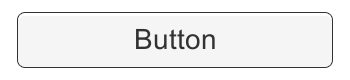
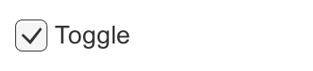
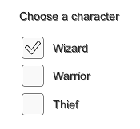
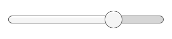
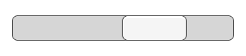
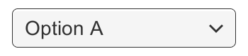
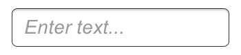
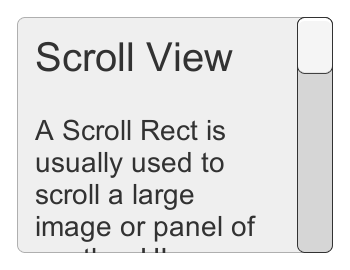

本节介绍 UI 系统中负责交互的组件，包括鼠标、触摸事件，以及键盘或控制器交互。
交互组件本身不可见，必须与一个或多个视觉组件组合才能正常工作。参考：visual components
共有功能（Common Functionality）
大多数交互组件都是 Selectable，共享状态视觉转换（Normal、Highlighted、Pressed、Disabled）及通过键盘或控制器导航到其他 Selectable 的内置功能。参阅 Selectable 页面。
交互组件至少有一个 UnityEvent，在用户以特定方式操作时调用。UI 系统会捕获并记录 UnityEvent 关联代码向外传播的异常。
按钮（Button）
Button 的 OnClick UnityEvent 定义单击按钮后执行的操作。

Button 组件的使用细节参阅 Button 页面。
开关（Toggle）
Toggle 的 Is On 决定当前开关状态。用户单击时该值反转，并可相应显示或隐藏勾选标记。OnValueChanged UnityEvent 定义值改变时的操作。

Toggle 组件的使用细节参阅 Toggle 页面。
开关组（Toggle Group）
Toggle Group 用于将一组 Toggle 设为互斥。同组中一次只能选中一个 Toggle，选中某个开关会自动取消其他开关。参考：Toggles

Toggle Group 组件的使用细节参阅 Toggle Group 页面。
滑块（Slider）
Slider 的 Value 是可在最小值和最大值之间拖动的小数。滑块可以水平或垂直放置，并通过 OnValueChanged UnityEvent 定义值改变时的操作。

Slider 组件的使用细节参阅 Slider 页面。
滚动条（Scrollbar）
Scrollbar 的 Value 是 0～1 之间的小数，用户拖动滚动条时会相应改变。
Scrollbar 常与 Scroll Rect 和 Mask 组合成滚动视图。Size 是 0～1 的值，表示手柄长度占整条滚动条的比例。通常由其他组件控制，以反映可见内容占总内容的比例；Scroll Rect 可自动完成这项工作。
Scrollbar 可水平或垂直放置，通过 OnValueChanged UnityEvent 定义值改变时的操作。

Scrollbar 组件的使用细节参阅 Scrollbar 页面。
下拉框（Dropdown）
Dropdown 提供可选择的选项列表。每个选项可包含字符串和可选图像，可以在 Inspector 中设置，也可用代码动态设置。OnValueChanged UnityEvent 定义当前选项改变时的操作。

Dropdown 组件的使用细节参阅 Dropdown 页面。
输入框（Input Field）
Input Field 使用户可以编辑 Text Element 的文本。一个 UnityEvent 用于文本内容变化时的操作，另一个用于用户结束编辑时的操作。

Input Field 组件的使用细节参阅 Input Field 页面。
滚动区域／滚动视图（Scroll Rect / Scroll View）
需要在小区域内显示大内容时，可使用 Scroll Rect 来滚动查看内容。
Scroll Rect 通常与 Mask 配合，使区域内的可滚动内容可见、区域外内容被遮挡；还可配合一条或两条 Scrollbar，允许用户拖动以水平或垂直滚动。参考：Scrollbars

Scroll Rect 组件的使用细节参阅 Scroll Rect 页面。